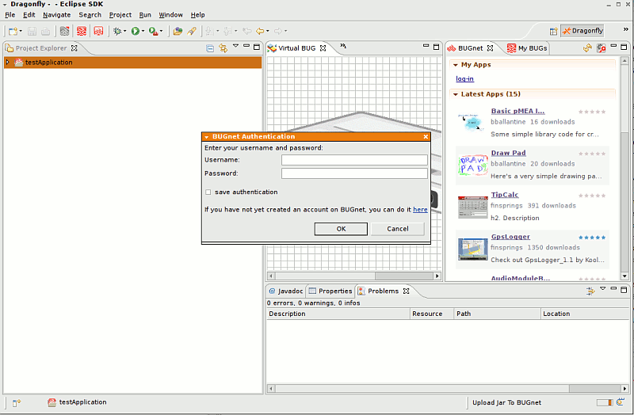

Upload an Application to BUGnet
- In the Project Explorer, right-click the application and select Send to BUGnet. (Note: You may also Drag & Drop applications from Project Explorer into the BUGnet view)
- If necessary, log in with your BUGnet username and password.
- The BUGnet view will refresh and show your application.
- By Default the first time you upload an application it will be marked as Private on BUGnet. If you would like the Public to see it, you can change this setting by going to BUGnet and edit your application.
